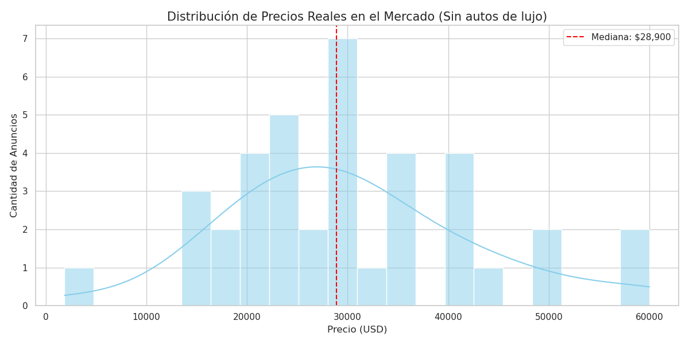
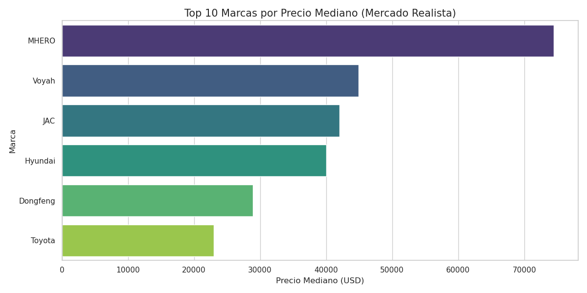
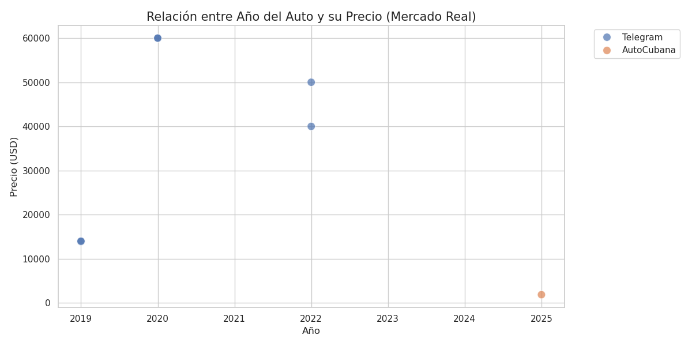
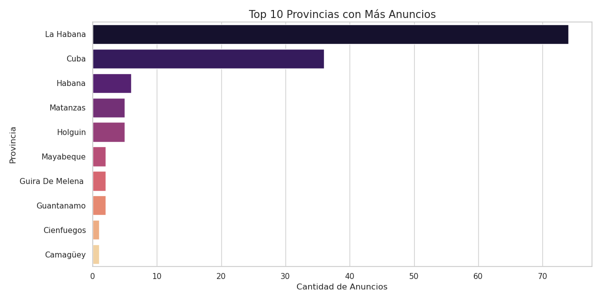
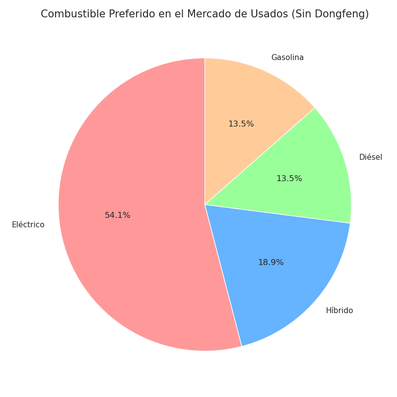

Análisis Visual

Análisis: El mercado está fuertemente sesgado. La mayoría de los autos se concentran en rangos económicos (menos de $15,000 USD), pero la presencia de autos de lujo infla el promedio. Conclusión: La mediana es una medida más representativa del valor real de los vehículos en Cuba que el promedio.

Análisis: Hyundai, Kia y Toyota dominan abrumadoramente la oferta del mercado. Conclusión: Existe una clara preferencia del consumidor por marcas con alta disponibilidad de repuestos, lo que genera una mayor rotación y oferta de estas marcas en el mercado informal.

Análisis: Se observa una clara correlación positiva: a mayor año, mayor precio. Sin embargo, se identifican "outliers" (valores atípicos) de autos muy nuevos con precios desproporcionados que rompen la tendencia lineal. Conclusión: El año de fabricación explica más del 50% del valor del auto.

Análisis: Existe una alta concentración de datos en "Desconocida" porque muchas plataformas no solicitan la provincia. Entre las registradas, La Habana domina la oferta, seguida de Holguín y Matanzas. Conclusión: El mercado está centralizado en la capital, aunque hay falta de datos geográficos formales.

Análisis: Aproximadamente el 54% de la oferta son vehículos eléctricos. Conclusión Crítica: Existe una gran paradoja entre la oferta y la demanda. Aunque los datos muestran una alta oferta de eléctricos, las entrevistas revelan que la demanda real sigue prefiriendo la combustión por la crisis energética. Esto sugiere que el mercado de eléctricos está sobreofertado o que los dueños los revenden por falta de infraestructura para cargarlos.
Conclusiones Generales del Análisis Visual
- Relación Año-Precio: Existe una correlación positiva clara, aunque distorsionada por autos de lujo (outliers).
- Sesgo de las fuentes: La oferta estatal (Dongfeng) empuja la balanza hacia los eléctricos, mientras que el mercado informal (Revolico/Telegram) se inclina más por la combustión.
- Factores cualitativos: El precio en Cuba no depende solo del año y la marca, sino de los "papeles", el estado de la dirección (por los baches) y la disponibilidad de repuestos.